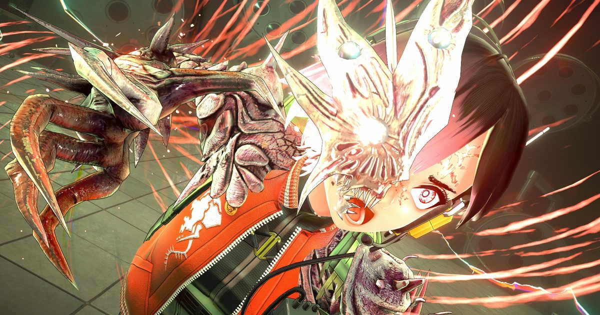

2026-10-27 · 类型深读
以《CRYMACHINA》《MONARK》这类 JRPG 为人所知的 FURYU，交出了它的第一款第三人称射击游戏。 《アノマリス / ANOMALITH》（中文名《异界揭踪》）将于 10 月 28 日（Steam）／29 日（日本与主机）登陆 PS5、Nintendo Switch 2 与 PC，标准版 8,580 日元 / 49.99 美元。 真正让人坐直的是主创名单：剧本田中罗密欧，角色设计 MON（西尾维新系列作品插画），作曲北村友香——《艾尔登法环》《只狼》《血源诅咒》《黑暗之魂 III》的声音。 一个写末世孤独的作家，一个画西尾式怪人的画师，一个写魂系庄严感的作曲家，被放进同一款日本少女打枪的游戏里。这三个人能凑在一起，本身就是这篇文章要回答的问题。

舞台是「20██ 年的日本」——一个昭和时代一直延续下去、从未进入平成与令和的平行日本。 某天起，名为「异界」（Anomaly Zone）的空间毫无征兆地出现在全国各处，扭曲物理法则，把寻常场所变成不该存在的地形。 17 岁的水无月玲奈（CV：上田瞳）在和挚友加藤亚里沙（CV：春濑夏美）逛商场时遭遇异化，两人失散。 为了找回朋友，她自愿成为政府「异界对策室」的潜入者 Diver，反复回到那些地方。
第一次下潜就是灾难：同行的资深 Diver 全灭，只有玲奈活了下来——因为某种与异界本身相关的、不该属于人类的力量在她体内醒了。 游戏核心循环被官方概括为三个词：Dive（下潜）、Retrieve（回收）、Return（返回）。 进异界、在异形生物的包围下搜刮异常物件、活着撤回基地，用战利品研发与升级武器装备，然后再下去一次。
系统层面已知的有：12 种「异化技能」（Anomalization Skills），既能进攻也能防守，其中弹反（parry）是最关键的一项；技能消耗独立能量条，而这条能量靠开枪命中回充——也就是「射击供能、技能创造输出窗口、再射击」的循环，游戏不鼓励你龟着打。 装备有 9 个槽位、超过 300 件可定制物品，外观与数值分离，你可以穿着喜欢的衣服下潜。 主角还有一个「半异化」（Demi-Humanization）系统：她在异界中获得的力量需要靠药物压制，这条设定同时是剧情与战斗的资源源。
FURYU 的制作人在接受 Automaton 采访时说得很坦白：这个项目是「公司里喜欢射击游戏的人自己想做的」，不是上面派下来的活；基础系统参考《生化危机》，资源循环参考《逃离塔可夫》。 这两句自白，比任何宣传语都更值得琢磨。
先说美术。本作的视觉母题官方直接写成了 Liminal Space（阈限空间）：重力翻转的公寓楼、会无限增殖的商店街、看上去像刚刚才被废弃的医院与商业街、还在运转却空无一人的公共电话与招牌。 请注意它不是废墟。废墟是「很久以前坏掉的」，时间已经替你消化了情绪；本作的场景是「刚刚才坏掉的」——东西还在原位，灯还亮着，只是人没了。 恐怖从这里来，不从怪物来。
而「昭和一直延续」这个设定，是给这层恐怖加的第二道锁。对日本玩家来说，昭和是一个既熟悉又已经不可能回去的时代，是「还没坏掉的过去」；对海外玩家来说，它天然带着 backrooms 式的失真滤镜——一个你从没去过、却觉得应该在记忆里的日本。 同一个场景，两批玩家各自用自己的方式不安，这在日式恐怖里是相当少见的一箭双雕。
声音设计也踩在同一条线上。试玩过的媒体普遍提到：探索时音乐几乎完全退到背景，脚步声、装备摩擦声、环境本身的响动占满耳朵；只有威胁出现，音乐才压上来。 这个处理和「阈限空间」是配套的——安静不是氛围，安静是信息。你在听的其实不是配乐，是这个空间是否还在按常理运作。
现在回头看主创名单，就顺了。 北村友香最擅长的不是吓人，是「巨大的东西正在逼近」时的那种肃穆与哀悼——她写的是盖尔、是苇名一心、是月之公主，是「你正在见证一个世界的结尾」。 田中罗密欧写的也从来不是惊悚，是《人类衰退之后》《终焉之星》里那种温柔、缓慢、众人已经接受结局的日常。 这两个人的共同点是：他们都擅长「安静地看着世界结束」。 把他们放进一个「昭和没有结束的日本」，得到的不是 jump scare 合集，而是一首给正在缓慢异化的国家写的安魂曲。这大概是今年主创与题材咬合得最紧的一次。
再看第二个自白：基础参考生化危机，循环参考塔可夫。这两个参考放在一起，本来是互相打架的。
| 作品 | 背包 | 死亡损失 | 对手 | 焦虑来源 |
|---|---|---|---|---|
| 生化危机（经典） | 格子，道具即生命线 | 回到上一个存档 | PvE | 这一格该不该带 |
| 生化危机 4 重制版 | 格子 + 商人 + 掉落 | 回到存档，几乎无永久损失 | PvE | 掉落率与改造路线 |
| 逃离塔可夫 | 格子 + 装备栏 | 本次带入与拾取全部丢失 | PvPvE | 别的玩家，以及「再摸一件」 |
| SIGNALIS | 极窄格子 + 有限存档 | 回到存档，资源不回滚 | PvE | 稀缺本身 |
| ANOMALITH | 格子（比生化宽松） | 本次未送回仓库的收获丢失 | 纯 PvE | 要不要再往里走一层 |
塔可夫的紧张感有一半来自「对面也是人」——不可预测、不讲道理、你永远不知道门后是不是蹲着一个更有耐心的人。 本作把 PvP 拿掉了，只留下损失机制。这是一个相当大的改写。 试玩报告里提到一个细节：物资只能单向传回仓库，玩家在关卡里没法把仓库里的东西取出来。也就是说，你的每一次「再往里走一层」，赌的都是这一趟已经摸到的东西。 存档点（可回传物资的安全屋）密度给得相当宽裕，这又把焦虑的刻度调小了一档。
所以它不是塔可夫，也不是生化危机。 它做的是「可被存档保护的贪婪」——把撤离游戏那种「再多拿一件就走」的心理，放进一个你可以随时暂停、可以随时读档的单机里。 这个组合的好处很实在：日式单机玩家不必承受被陌生玩家抢走一切的挫败；风险也很实在：一旦玩家发现「反正能读档」，塔可夫那一半就自动失效了。 这套系统能不能成立，取决于死亡惩罚到底有多疼，而这一点目前只有一个互相矛盾的线索——我们在下一节说。
我们的观察 · 两条互相打架的公开信息
官方在 TGS 2026 上摆出的「Survival Mode」，是主角被一击必杀的高难度模式；可开发制作人在同一场活动里说，首日玩家的通关时间平均只有 10 到 20 分钟。 这两句话放在一起非常奇怪：一个能让人十分钟打完的关卡，为什么要配置一个一击必死的模式？ 合理的解释是——展会上的关卡本来就是一小段，而 Survival Mode 是给媒体和硬核玩家准备的展示品，不是给普通玩家的基准。 但它也顺手暴露了一件事：我们至今不知道本作一个完整「下潜」的时长与密度。十分钟通关可能意味着关卡紧凑、节奏好；也可能意味着内容密度撑不起 8,580 日元的定价。 这两个解释之间，只差一次完整流程的实况。
我们的观点 · 它罕见地把「demo」当成了产品本身来做
把这条发行线拉出来看，会发现 FURYU 做了一件日本厂商里相当少见的事：整个前置期几乎完全由 demo 驱动。 6 月封闭测试拿到约 75% 的好评，原本打算抽选，后来干脆对所有申请者放行；8 月的限时 demo 带来约两万条新增愿望单，官方直接把期限延长成无限；8 月 8 日愿望单破 7 万，随即放出里程碑视频；10 月又把 demo 铺到 PS5 与 Switch 2。 这在日本厂商里是很少见的打法——他们通常更愿意把物料锁到发售前一个月才放。 敢这么做，说明他们相信自己的东西经得起先玩后买。
我们的观察 · 但 demo 也可能吃掉首发的第一小时
风险同样来自 demo。试玩版包含教学 + 一整个医院关卡，含一场 Boss 战和箱庭探索，两小时内可以通关，并且通关后可以无限刷同一关来凑齐武器与配件。 这带来两个问题：第一，愿意刷的玩家在发售前就已经把这关摸烂了，首发那天的新鲜感会被自己提前消费掉；第二，一个 demo 能提供完整的成长循环（刷材料—做武器—换词条），某种程度上等于告诉玩家「正式版也就是这个循环的重复」。 延长 demo 期限收获的是愿望单，代价可能是首发当天的兴奋度。
我们的观点 · 「自下而上立项」既是优势，也是隐患
制作人说这是公司里喜欢射击游戏的人自己想做的项目。这句话很可爱，也很危险。 可爱在于：它解释了为什么一个 JRPG 厂商会去做 TPS，也解释了为什么他们会主动对齐生化危机与塔可夫——那是玩家的参照系，不是发行商的。 危险在于：当制作人自己承认「基础系统参考」时，通常意味着系统层面以复刻为主，原创的部分会集中在题材、叙事与美术上。 这恰好和主创名单对上了——最强的原创资源（田中罗密欧、MON、北村友香）全都在「氛围」这一侧。 所以我们判断：本作真正值得期待的是它的异界本身，而不是它有多好玩。
我们的实验 · 两个可以自己验的判据
试玩版三平台免费，建议这样测：
另外顺手留意两件已知的瑕疵有没有被修：PC 端默认键位相当反直觉（菜单键是 Tab、返回是 C），且按钮图标会在 PS 与 Xbox 布局之间来回跳；以及没有翻滚闪避这件事，在你第一次被两只怪夹住时会立刻变得很重要。
我们的评分
说到底，《ANOMALITH》最值得记的不是「FURYU 做了一款射击游戏」，而是「一个 JRPG 厂商决定让它最会写末世的人、最会画怪人的人、最会写庄严的人，一起去描述一座没有结束的昭和」。 这个组合能不能变成好玩的游戏，要等 10 月 28 日之后才知道； 但它至少说明一件事——在所有人都往开放世界和服务型游戏挤的 2026 年，还有人愿意为一个「安静的、错误的日本」花上三年。 光凭这一点，它就比大多数同期新作更值得看一眼。